pacman::p_load(phyloseq, tidyverse, ggpubr, microViz, fun.gus, ggbeeswarm, patchwork, install = FALSE)
source("code/R/plotting_aesthetics.R")
load("data/06_Flow_Cytometry/flow_physeq.RData")Measure Alpha Diversity and Assess Sequencing Depth
Load packages
Check Rarefaction
This function comes from fun.gus!
set.seed(031491)
rarefaction_data <- fast_rarefaction_curves(flow_physeq, iterations = 50, steps = 40)Plotting Rarefaction Curves
rarefaction_data %>%
pivot_longer(hill0:hill2, names_to = "Order", values_to = "Value") %>%
ggplot(aes(x = depth, y = Value, color = sample_id)) +
stat_summary(geom = "line", fun = mean) +
facet_wrap(~Order, scales = "free_y") +
theme(legend.position = "none")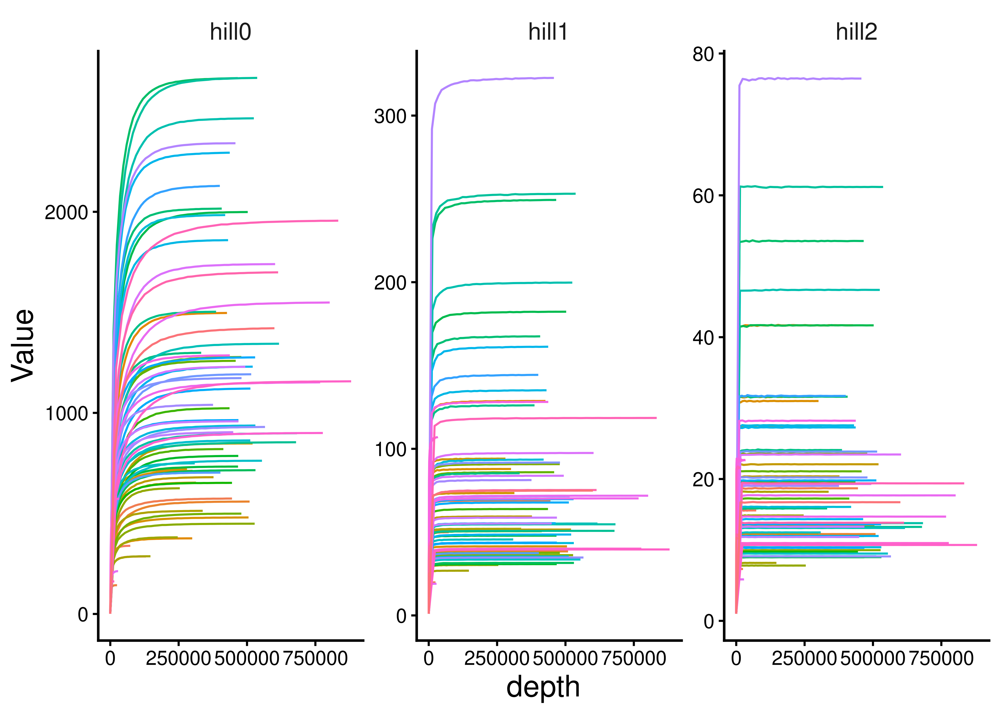
rarefaction_data %>%
ggplot(aes(x = depth, y = hill0, color = sample_id)) +
stat_summary(geom = "line", fun = mean) +
theme(legend.position = "none") +
coord_cartesian(ylim = c(0,1000), xlim = c(0, 50000))
rarefaction_data %>%
ggplot(aes(x = depth, y = hill0, color = sample_id)) +
stat_summary(geom = "line", fun = mean) +
theme(legend.position = "none") +
coord_cartesian(ylim = c(0,1000), xlim = c(0, 50000))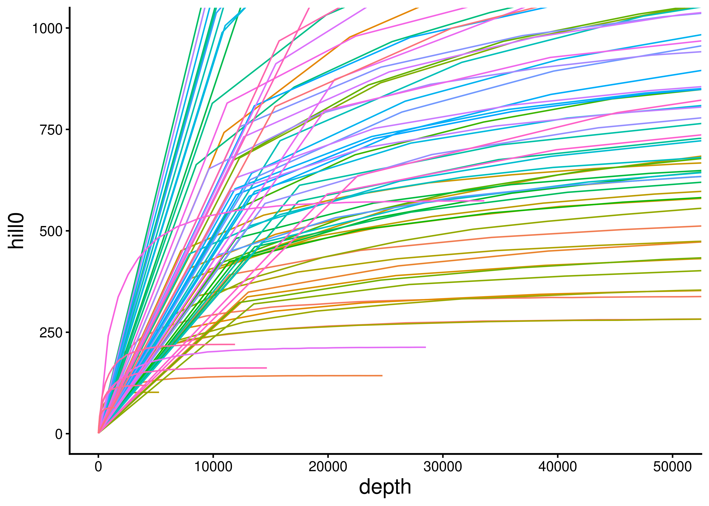
rarefaction_data %>%
ggplot(aes(x = depth, y = hill0, color = sample_id)) +
stat_summary(geom = "line", fun = mean) +
theme(legend.position = "none") +
coord_cartesian(ylim = c(0,250), xlim = c(0, 5000))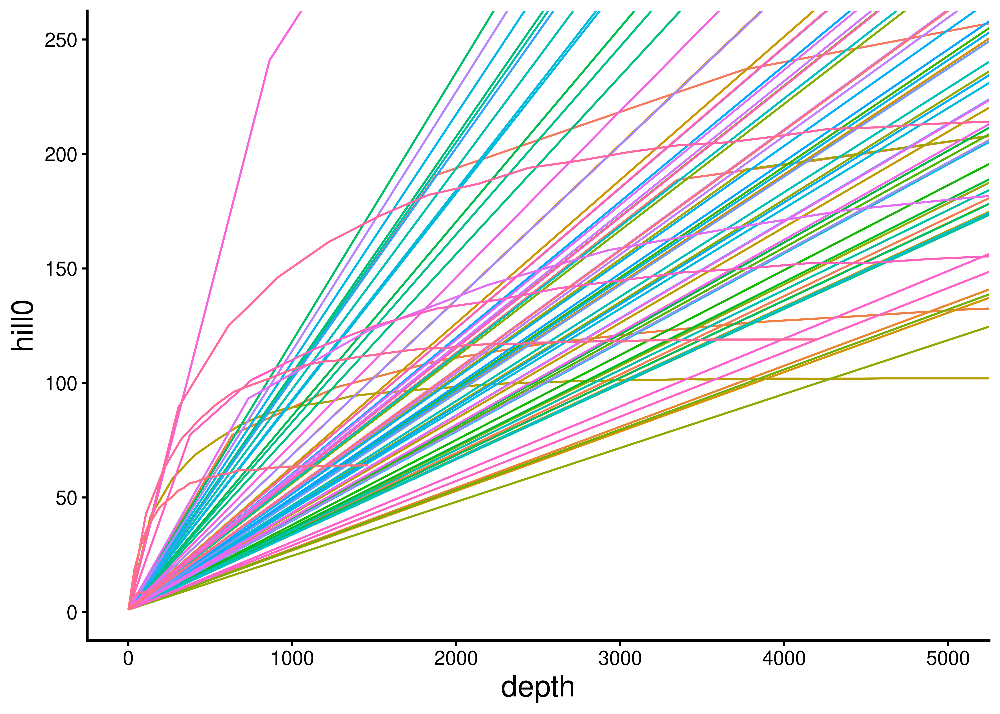
They all “appear” to flatten, but we can be real with ourselves that we probably want at least 10000 reads.
summarized_rarefaction <-
rarefaction_data %>%
group_by(sample_id) %>%
filter(depth == max(depth)) %>%
pivot_longer(hill0:hill2, names_to = "Order", values_to = "Value") %>%
ungroup() %>%
group_by(sample_id, Order) %>%
summarize(depth = mean(depth),
value = mean(Value))
summarized_rarefaction %>%
ggplot(aes(x = depth, y = value)) +
geom_point() +
facet_wrap(~Order, scales = "free_y") +
stat_cor() +
geom_vline(xintercept = 10000)summarized_rarefaction %>%
filter(depth < 50000) %>%
ggplot(aes(x = depth, y = value)) +
geom_point() +
facet_wrap(~Order, scales = "free_y") +
stat_cor() +
geom_vline(xintercept = 10000)Lol, yes. We especially see down where richness is less than 250. I think 10,000 might be a reasonable cut-off. Especially since some of those lows are sitting well within warm, surface samples, which throughout the dataset generally have high richness.
sort(sample_sums(flow_physeq)) %>% head(10)KH_D072 KH_D081 KH_D082 KH_D080 KH_D014 KH_D079 KH_D076 KH_D004 KH_D066 KH_D071
1 151 1460 4197 5284 11901 14676 24740 28522 33609 # Who are these?
flow_physeq %>%
prune_samples(sample_sums(.) < 1e4, .) %>%
sample_data() %>%
data.frame() %>%
select(Sample_ID, DNA_ID) Sample_ID DNA_ID
KH_D072 AAM_ERI_20240914_91_FP_ET_1 KH_D072
KH_D080 AAM_ERI_20240913_964_FP_ET_2 KH_D080
KH_D081 AAM_ERI_20240914_966_FP_ET_1 KH_D081
KH_D082 AAM_ERI_20240915_EB06_FP_ET_1 KH_D082
KH_D014 AAM_ERI_20240520_91_FP_ET_1 KH_D014floor_physeq <-
flow_physeq %>%
prune_samples(sample_sums(.) > 1e4, .)
rar_limit <- min(sample_sums(floor_physeq))
even_rarefaction_results <-
rarefaction_alpha_calculations(floor_physeq,
rarefy_depth = rar_limit,
iterations = 100,
method = "taxonomic",
seed = 031491,
threads = 8)[1] "Calculating taxonomic diversity approaches on floor_physeq"for_join <-
summarized_rarefaction %>%
select(Sample = sample_id, Measure = Order, non_rare = value) %>%
mutate(Measure = case_when(Measure == "hill0" ~ "Richness",
Measure == "hill1" ~ "Shannon",
Measure == "hill2" ~ "Simpson"))
even_rarefaction_results %>%
left_join(for_join) %>%
ggplot(aes(x = non_rare, y = qD)) +
geom_point() +
geom_smooth(method = "lm", se = FALSE, color = "orange" ) +
facet_wrap(~Measure, scales = "free") +
geom_abline(intercept = 0, slope = 1) +
labs(x = "Non-Rarefied Values", y = "Rarefied to Even Depth") +
stat_regline_equation(formula = y ~ x + 0, color = "orange")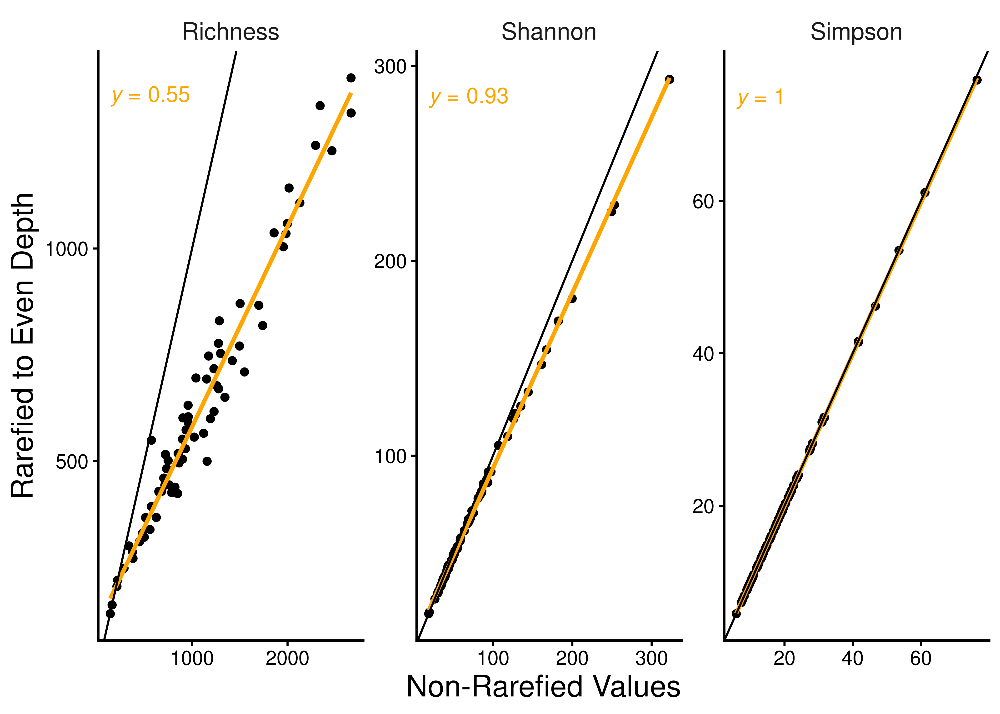
Okay, so here we are comparing the values we get for alpha diversity, either by rarefying all samples to an even depth (y axis) or just using observed values without rarefaction (x-axis). For Hill numbers > 0 (Shannon and Simpson) the values are essentially equal. However, we do have lower observed Richness when we rarefy to an even depth, especially at higher “observed richnesses”.
Examining Richness
sample_df <- sample_data(floor_physeq) %>%
data.frame()
sample_and_div <-
even_rarefaction_results %>%
rename(DNA_ID = Sample) %>%
left_join(sample_df)sample_and_div %>%
mutate(Month = factor(Month, levels = c("May","August","September"))) %>%
ggplot(aes(x = Month, y = qD)) +
geom_boxplot() +
geom_point() +
facet_wrap(~Measure, scales = "free")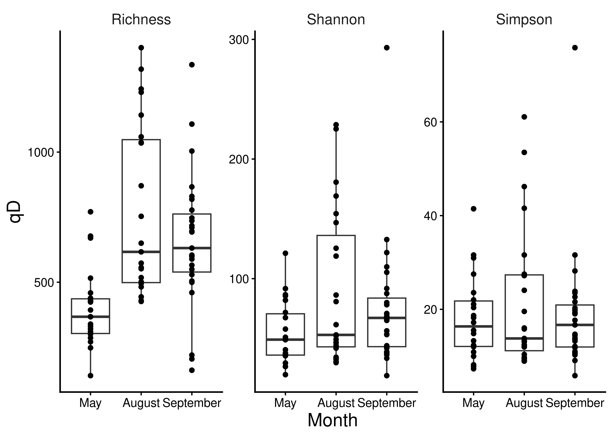
sample_and_div %>%
filter(Measure == "Richness") %>%
mutate(Month = factor(Month, levels = c("May","August","September")),
Basin = factor(Basin, levels = c("W","C","E"))) %>%
ggplot(aes(x = Basin, y = qD)) +
geom_boxplot() +
geom_point() +
facet_wrap(~Month, scales = "free")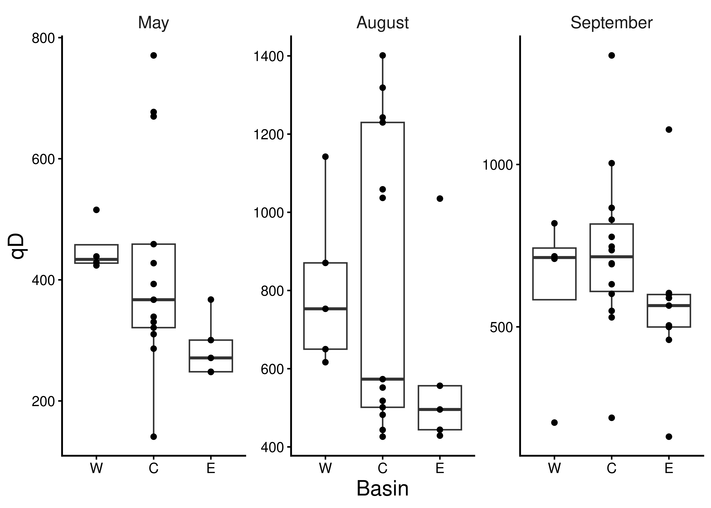
sample_and_div %>%
filter(Measure == "Richness") %>%
mutate(Month = factor(Month, levels = c("May","August","September")),
Basin = factor(Basin, levels = c("W","C","E"))) %>%
ggplot(aes(x = Depth_Class, y = qD)) +
geom_boxplot() +
geom_point() +
facet_wrap(~Month, scales = "free")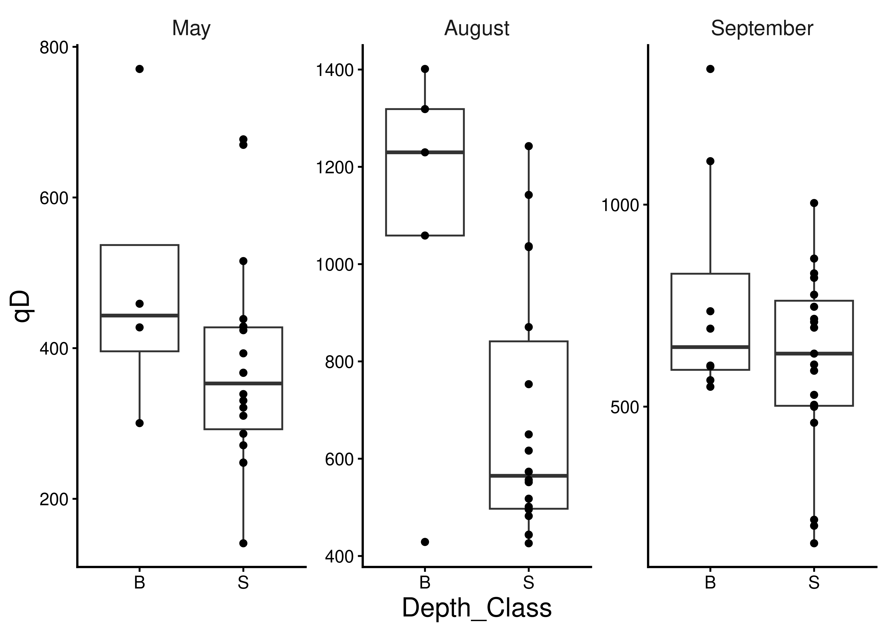
sample_and_div %>%
filter(Measure == "Richness") %>%
mutate(Month = factor(Month, levels = c("May","August","September")),
Basin = factor(Basin, levels = c("W","C","E"))) %>%
ggplot(aes(x = Depth_Class, y = qD)) +
geom_boxplot() +
geom_point() +
facet_wrap(~Month)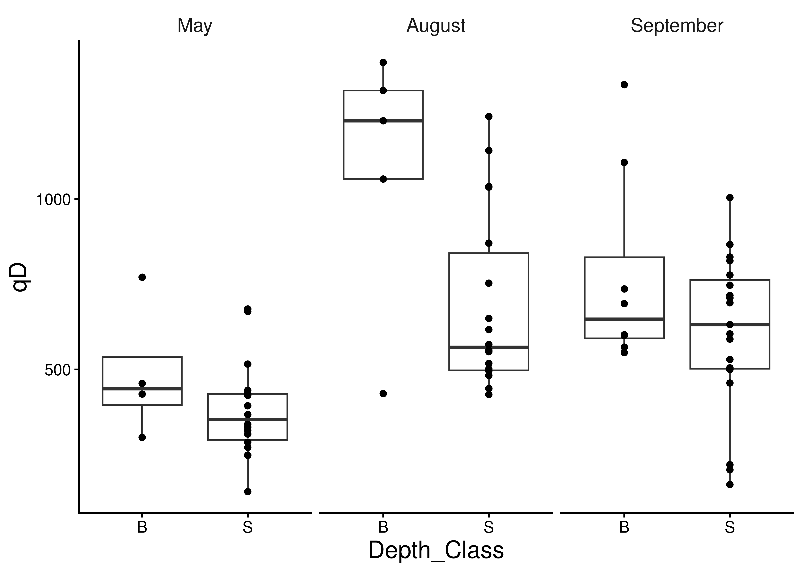
sample_and_div %>%
filter(Measure == "Shannon") %>%
mutate(Month = factor(Month, levels = c("May","August","September")),
Basin = factor(Basin, levels = c("W","C","E"))) %>%
ggplot(aes(x = Depth_Class, y = qD)) +
geom_boxplot() +
geom_point() +
facet_wrap(~Month)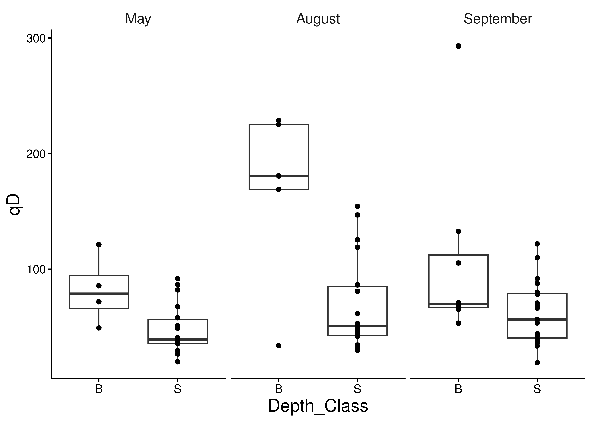
sample_and_div %>%
filter(Measure == "Simpson") %>%
mutate(Month = factor(Month, levels = c("May","August","September")),
Basin = factor(Basin, levels = c("W","C","E"))) %>%
ggplot(aes(x = Depth_Class, y = qD)) +
geom_boxplot() +
geom_point() +
facet_wrap(~Month)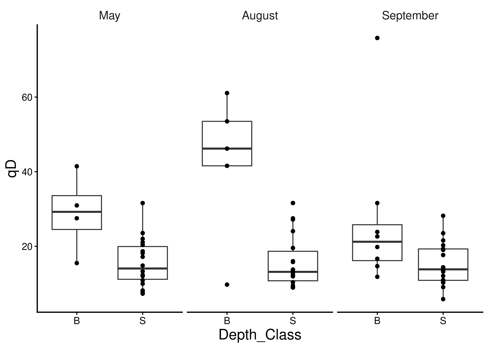
Add diversity to our physeq and save
alpha_for_join <-
even_rarefaction_results %>%
rename(DNA_ID = Sample) %>%
select(-st.dev) %>%
pivot_wider(names_from = Measure, values_from = qD)
diversity_physeq <-
floor_physeq %>%
ps_join(alpha_for_join)
diversity_physeq_lower_abundance <-
flow_physeq %>%
subset_samples(.,!DNA_ID %in% c("KH_D072","KH_D081")) %>%
prune_taxa(taxa_sums(.) > 0, .) %>%
ps_join(alpha_for_join)
save(diversity_physeq,
file = "data/07_Alpha_Diversity/diversity_physeq.RData")
save(diversity_physeq_lower_abundance,
file = "data/07_Alpha_Diversity/diversity_physeq_lower_abundance.RData")Mapping Prokaryotic Diversity
Mapping Cell Counts
pacman::p_load(sf, terra, tmap, gstat, install = FALSE)
# Define some shapes and objects
raw_erie <- read_sf("data/spatial_imports/hydro_p_LakeErie/hydro_p_LakeErie.shp") %>%
st_transform(crs = "EPSG:4326")
erie_outline <- raw_erie %>%
st_union()
div_data <-
diversity_physeq %>%
sample_data() %>%
data.frame()
div_sf <- div_data %>%
dplyr::filter(!is.na(Longitude)) %>%
st_as_sf(coords = c("Longitude","Latitude"), crs = "EPSG:4326")div_sf %>%
dplyr::filter(Depth_Class == "S") %>%
mutate(Month = factor(Month, levels = c("May", "August","September"))) %>%
ggplot() +
geom_sf(aes(color = Richness), size = 3, alpha = 0.7) +
facet_wrap(~Month, ncol = 1) +
scale_color_distiller(palette = "Spectral") +
geom_sf(data = erie_outline, fill = NA)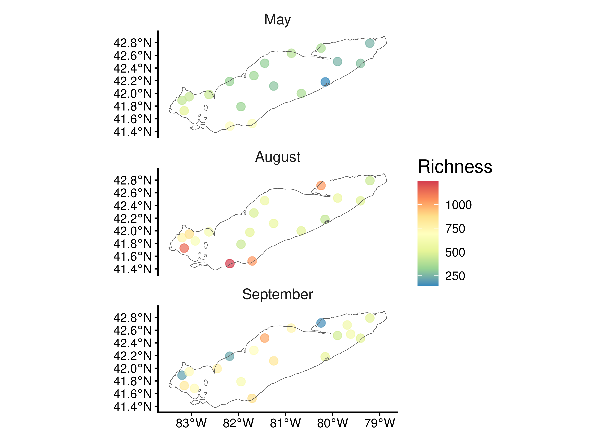
div_sf %>%
dplyr::filter(Depth_Class == "S") %>%
mutate(Month = factor(Month, levels = c("May", "August","September"))) %>%
ggplot() +
geom_sf(aes(color = Shannon), size = 3, alpha = 0.7) +
facet_wrap(~Month, ncol = 1) +
scale_color_distiller(palette = "Spectral") +
geom_sf(data = erie_outline, fill = NA)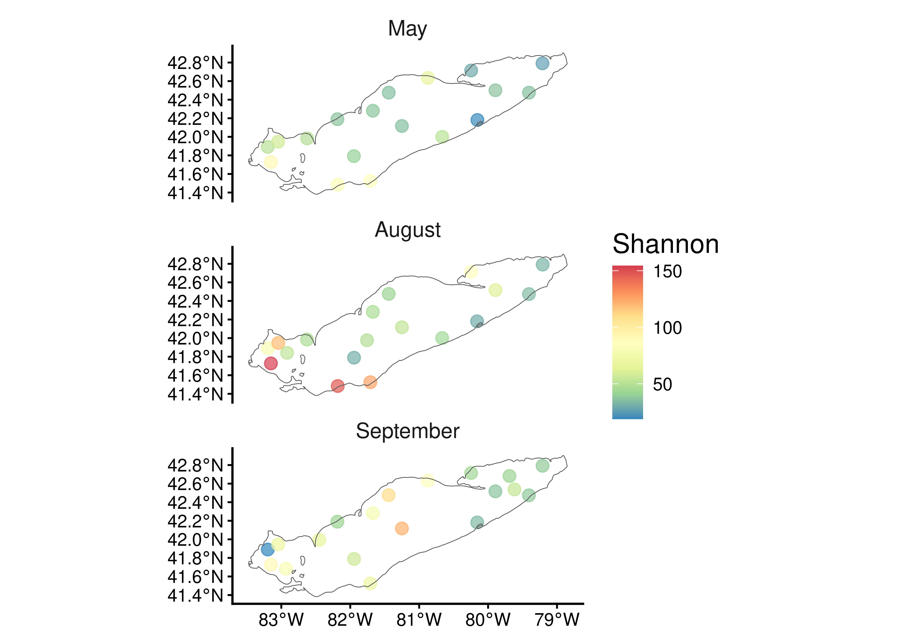
div_sf %>%
dplyr::filter(Depth_Class == "S") %>%
mutate(Month = factor(Month, levels = c("May", "August","September"))) %>%
ggplot() +
geom_sf(aes(color = Simpson), size = 3, alpha = 0.7) +
facet_wrap(~Month, ncol = 1) +
scale_color_distiller(palette = "Spectral") +
geom_sf(data = erie_outline, fill = NA)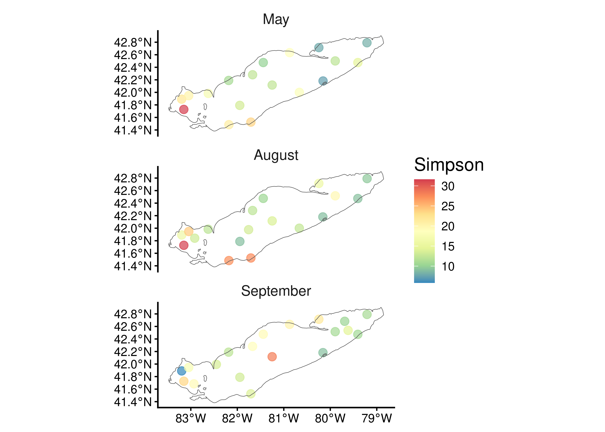
div_sf %>%
ggplot(aes(x = Richness, y = Shannon, color = Simpson)) +
geom_point() +
scale_color_distiller(palette = "Spectral")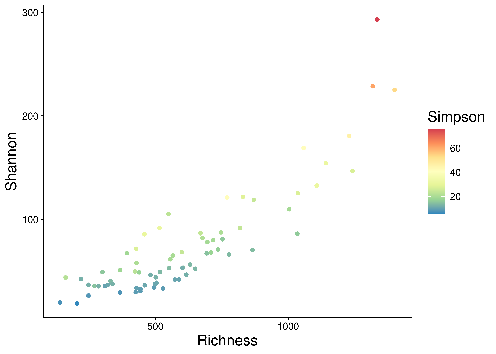
These metrics are all highly correlated with each other. Remember that this is rarefied to an even sequencing depth!
bottom_sf <- div_sf %>%
dplyr::filter(Depth_Class == "B") %>%
mutate(Month = factor(Month, levels = c("May", "August","September")))
shift_bottom_sf <- bottom_sf
st_geometry(shift_bottom_sf) <- st_geometry(bottom_sf) + c(.06,-.03)
shift_bottom_sf <- st_set_crs(shift_bottom_sf, st_crs(bottom_sf))
div_sf %>%
dplyr::filter(Depth_Class == "S") %>%
mutate(Month = factor(Month, levels = c("May", "August","September"))) %>%
ggplot() +
geom_sf(data = shift_bottom_sf, aes(color = Richness), size = 4, alpha = 1) +
geom_sf(aes(color = Richness), size = 4, alpha = 1) +
facet_wrap(~Month, ncol = 1) +
scale_color_distiller(palette = "Spectral") +
geom_sf(data = erie_outline, fill = NA)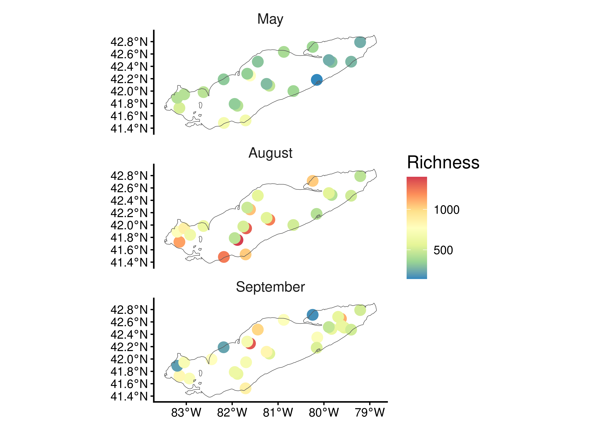
Compared Eukaryotic and Prokaryotic Diversity
load("data/07_Alpha_Diversity/euk_diversity_physeq.RData")
euk_div <-
euk_diversity_physeq %>%
sample_data() %>%
data.frame() %>%
select(Sample_ID, Richness:Simpson) %>%
rename_with(.cols = Richness:Simpson, .fn = \(x)paste0("Euk_", x))
joined_div <-
div_data %>%
left_join(euk_div)
joined_div %>%
ggplot(aes(x = Richness, y = Euk_Richness)) +
geom_point() +
stat_cor() +
facet_wrap(~Month)joined_div %>%
ggplot(aes(x = Shannon, y = Euk_Shannon)) +
geom_point() +
stat_cor() +
facet_wrap(~Month)joined_div %>%
ggplot(aes(x = Simpson, y = Euk_Simpson)) +
geom_point() +
stat_cor() +
facet_wrap(~Month)joined_div %>%
pivot_longer(cols = c("Richness", "Euk_Richness"), names_to = "Metric", values_to = "Richness") %>%
ggplot(aes(x = Water_Surface_Temp_C, y = Richness)) +
geom_point() +
stat_cor() +
facet_grid(Metric~Month, scales = "free")joined_div %>%
pivot_longer(cols = c("Richness", "Euk_Richness"), names_to = "Metric", values_to = "Richness") %>%
ggplot(aes(x = Depth, y = Richness)) +
geom_point() +
stat_cor() +
facet_grid(Metric~Month, scales = "free")joined_div %>%
pivot_longer(cols = c("Richness", "Euk_Richness"), names_to = "Metric", values_to = "Richness") %>%
ggplot(aes(x = total_chl_counts, y = Richness)) +
geom_point() +
stat_cor() +
facet_grid(Metric~Month, scales = "free")joined_div %>%
filter(Month == "September") %>%
pivot_longer(cols = c("Richness", "Euk_Richness"), names_to = "Metric", values_to = "Richness") %>%
ggplot(aes(x = rsg_pos_per_ml, y = Richness)) +
geom_point() +
stat_cor() +
facet_grid(Metric~Month, scales = "free")joined_div %>%
filter(Month == "September") %>%
pivot_longer(cols = c("Richness", "Euk_Richness"), names_to = "Metric", values_to = "Richness") %>%
ggplot(aes(x = rsg_perc_pos, y = Richness)) +
geom_point() +
stat_cor() +
facet_grid(Metric~Month, scales = "free") +
scale_x_continuous(limits = c(.1, 1))joined_div %>%
filter(Month == "September") %>%
pivot_longer(cols = c("Richness", "Euk_Richness"), names_to = "Metric", values_to = "Richness") %>%
ggplot(aes(x = rsg_mfi, y = Richness)) +
geom_point() +
stat_cor() +
facet_grid(Metric~Month, scales = "free")devtools::session_info()─ Session info ───────────────────────────────────────────────────────────────
setting value
version R version 4.3.3 (2024-02-29)
os Rocky Linux 9.8 (Blue Onyx)
system x86_64, linux-gnu
ui X11
language (EN)
collate en_US.UTF-8
ctype en_US.UTF-8
tz America/New_York
date 2026-10-07
pandoc 3.1.1 @ /usr/lib/rstudio-server/bin/quarto/bin/tools/ (via rmarkdown)
─ Packages ───────────────────────────────────────────────────────────────────
package * version date (UTC) lib source
abind 1.4-8 2024-09-12 [2] CRAN (R 4.3.3)
ade4 1.7-24 2026-03-21 [1] CRAN (R 4.3.3)
ape 5.8-1 2024-12-16 [1] CRAN (R 4.3.3)
backports 1.5.1 2026-04-03 [1] CRAN (R 4.3.3)
beeswarm 0.4.0 2021-06-01 [1] CRAN (R 4.3.3)
Biobase 2.62.0 2023-10-24 [2] Bioconductor
BiocGenerics 0.48.1 2023-11-01 [2] Bioconductor
biomformat 1.30.0 2023-10-24 [1] Bioconductor
Biostrings 2.70.3 2024-03-13 [1] Bioconductor 3.18 (R 4.3.2)
bitops 1.0-9 2024-10-03 [2] CRAN (R 4.3.3)
broom 1.0.13 2026-05-14 [1] CRAN (R 4.3.3)
cachem 1.1.0 2024-05-16 [2] CRAN (R 4.3.3)
car 3.1-5 2026-02-03 [1] CRAN (R 4.3.3)
carData 3.0-6 2026-01-30 [1] CRAN (R 4.3.3)
class 7.3-22 2023-05-03 [2] CRAN (R 4.3.3)
classInt 0.4-11 2025-01-08 [2] CRAN (R 4.3.3)
cli 3.6.6 2026-04-09 [1] CRAN (R 4.3.3)
cluster 2.1.6 2023-12-01 [2] CRAN (R 4.3.3)
codetools 0.2-19 2023-02-01 [2] CRAN (R 4.3.3)
crayon 1.5.3 2024-06-20 [2] CRAN (R 4.3.3)
data.table 1.18.6.1 2026-08-24 [1] CRAN (R 4.3.3)
DBI 1.2.3 2024-06-02 [2] CRAN (R 4.3.3)
devtools 2.4.5 2022-10-11 [2] CRAN (R 4.3.3)
digest 0.6.37 2024-08-19 [2] CRAN (R 4.3.3)
dplyr * 1.2.1 2026-04-03 [1] CRAN (R 4.3.3)
e1071 1.7-17 2025-12-18 [2] CRAN (R 4.3.3)
ellipsis 0.3.2 2021-04-29 [2] CRAN (R 4.3.3)
evaluate 1.0.1 2024-10-10 [2] CRAN (R 4.3.3)
extraDistr 1.10.0.5 2026-07-13 [1] CRAN (R 4.3.3)
farver 2.1.2 2024-05-13 [2] CRAN (R 4.3.3)
fastmap 1.2.0 2024-05-15 [2] CRAN (R 4.3.3)
forcats * 1.0.1 2025-09-25 [1] CRAN (R 4.3.3)
foreach 1.5.2 2022-02-02 [1] CRAN (R 4.3.3)
Formula 1.2-6 2026-08-03 [1] CRAN (R 4.3.3)
fs 1.6.5 2024-10-30 [2] CRAN (R 4.3.3)
fun.gus * 0.5.1 2026-10-07 [1] Github (MarschmiLab/fun.gus@ad8bd98)
furrr 0.4.0 2026-03-31 [1] CRAN (R 4.3.3)
future 1.76.0 2026-09-24 [1] CRAN (R 4.3.3)
generics 0.1.4 2025-05-09 [1] CRAN (R 4.3.3)
GenomeInfoDb 1.38.8 2024-03-15 [2] Bioconductor 3.18 (R 4.3.3)
GenomeInfoDbData 1.2.11 2024-11-25 [2] Bioconductor
ggbeeswarm * 0.7.3 2025-11-29 [1] CRAN (R 4.3.3)
ggplot2 * 4.0.3 2026-04-22 [1] CRAN (R 4.3.3)
ggpubr * 1.0.0 2026-07-06 [1] CRAN (R 4.3.3)
ggsignif 0.6.4 2022-10-13 [1] CRAN (R 4.3.3)
globals 0.19.1 2026-03-13 [1] CRAN (R 4.3.3)
glue 1.8.1 2026-04-17 [1] CRAN (R 4.3.3)
gtable 0.3.6 2024-10-25 [2] CRAN (R 4.3.3)
hillR 0.5.2 2023-08-19 [1] CRAN (R 4.3.3)
hms 1.1.4 2025-10-17 [1] CRAN (R 4.3.3)
htmltools 0.5.8.1 2024-04-04 [2] CRAN (R 4.3.3)
htmlwidgets 1.6.4 2023-12-06 [2] CRAN (R 4.3.3)
httpuv 1.6.15 2024-03-26 [2] CRAN (R 4.3.3)
igraph 2.1.1 2024-10-19 [2] CRAN (R 4.3.3)
IRanges 2.36.0 2023-10-24 [2] Bioconductor
iterators 1.0.14 2022-02-05 [1] CRAN (R 4.3.3)
jsonlite 1.8.9 2024-09-20 [2] CRAN (R 4.3.3)
KernSmooth 2.23-22 2023-07-10 [2] CRAN (R 4.3.3)
knitr 1.52 2026-09-06 [1] CRAN (R 4.3.3)
labeling 0.4.3 2023-08-29 [2] CRAN (R 4.3.3)
later 1.3.2 2023-12-06 [2] CRAN (R 4.3.3)
lattice 0.22-5 2023-10-24 [2] CRAN (R 4.3.3)
lifecycle 1.0.5 2026-01-08 [1] CRAN (R 4.3.3)
listenv 0.9.1 2024-01-29 [2] CRAN (R 4.3.3)
lubridate * 1.9.5 2026-02-04 [1] CRAN (R 4.3.3)
magrittr 2.0.5 2026-04-04 [1] CRAN (R 4.3.3)
MASS 7.3-60.0.1 2024-01-13 [2] CRAN (R 4.3.3)
Matrix 1.6-5 2024-01-11 [2] CRAN (R 4.3.3)
memoise 2.0.1 2021-11-26 [2] CRAN (R 4.3.3)
mgcv 1.9-1 2023-12-21 [2] CRAN (R 4.3.3)
microViz * 0.13.1 2026-07-28 [1] https://david-barnett.r-universe.dev (R 4.3.3)
mime 0.12 2021-09-28 [2] CRAN (R 4.3.3)
miniUI 0.1.1.1 2018-05-18 [2] CRAN (R 4.3.3)
multtest 2.58.0 2023-10-24 [1] Bioconductor
NatParksPalettes 0.2.0 2022-10-09 [1] CRAN (R 4.3.3)
nlme 3.1-164 2023-11-27 [2] CRAN (R 4.3.3)
otel 0.2.0 2025-08-29 [1] CRAN (R 4.3.3)
pacman 0.5.1 2019-03-11 [1] CRAN (R 4.3.2)
parallelly 1.48.0 2026-06-29 [1] CRAN (R 4.3.3)
patchwork * 1.3.0 2024-09-16 [2] CRAN (R 4.3.3)
permute 0.9-10 2026-02-06 [1] CRAN (R 4.3.3)
phyloseq * 1.46.0 2023-10-24 [1] Bioconductor
pillar 1.11.1 2025-09-17 [1] CRAN (R 4.3.3)
pkgbuild 1.4.5 2024-10-28 [2] CRAN (R 4.3.3)
pkgconfig 2.0.3 2019-09-22 [2] CRAN (R 4.3.3)
pkgload 1.4.0 2024-06-28 [2] CRAN (R 4.3.3)
plyr 1.8.9 2023-10-02 [2] CRAN (R 4.3.3)
polynom 1.4-1 2022-04-11 [1] CRAN (R 4.3.3)
profvis 0.4.0 2024-09-20 [2] CRAN (R 4.3.3)
promises 1.3.0 2024-04-05 [2] CRAN (R 4.3.3)
proxy 0.4-29 2025-12-29 [2] CRAN (R 4.3.3)
purrr * 1.2.2 2026-04-10 [1] CRAN (R 4.3.3)
R6 2.6.1 2025-02-15 [1] CRAN (R 4.3.3)
RColorBrewer 1.1-3 2022-04-03 [2] CRAN (R 4.3.3)
Rcpp 1.1.2 2026-07-05 [1] CRAN (R 4.3.3)
RCurl 1.98-1.16 2024-07-11 [2] CRAN (R 4.3.3)
readr * 2.2.0 2026-02-19 [1] CRAN (R 4.3.3)
remotes 2.5.0 2024-03-17 [2] CRAN (R 4.3.3)
reshape2 1.4.4 2020-04-09 [2] CRAN (R 4.3.3)
rhdf5 2.46.1 2023-11-29 [1] Bioconductor 3.18 (R 4.3.2)
rhdf5filters 1.14.1 2023-11-06 [1] Bioconductor
Rhdf5lib 1.24.2 2024-02-07 [1] Bioconductor 3.18 (R 4.3.2)
rlang 1.3.0 2026-07-05 [1] CRAN (R 4.3.3)
rmarkdown 2.32 2026-09-01 [1] CRAN (R 4.3.3)
rstatix 1.1.0 2026-07-23 [1] CRAN (R 4.3.3)
rstudioapi 0.17.1 2024-10-22 [2] CRAN (R 4.3.3)
s2 1.1.11 2026-06-01 [2] CRAN (R 4.3.3)
S4Vectors 0.40.2 2023-11-23 [2] Bioconductor 3.18 (R 4.3.3)
S7 0.2.2 2026-04-22 [1] CRAN (R 4.3.3)
scales 1.4.0 2025-04-24 [1] CRAN (R 4.3.3)
sessioninfo 1.2.2 2021-12-06 [2] CRAN (R 4.3.3)
sf * 1.1-3 2026-09-11 [1] CRAN (R 4.3.3)
shiny 1.9.1 2024-08-01 [2] CRAN (R 4.3.3)
stringi 1.8.4 2024-05-06 [2] CRAN (R 4.3.3)
stringr * 1.5.1 2023-11-14 [2] CRAN (R 4.3.3)
survival 3.5-8 2024-02-14 [2] CRAN (R 4.3.3)
terra * 1.9-50 2026-09-08 [1] CRAN (R 4.3.3)
tibble * 3.3.1 2026-01-11 [1] CRAN (R 4.3.3)
tidyr * 1.3.2 2025-12-19 [1] CRAN (R 4.3.3)
tidyselect 1.2.1 2024-03-11 [1] CRAN (R 4.3.2)
tidyverse * 2.0.0 2023-02-22 [1] CRAN (R 4.3.2)
timechange 0.4.0 2026-01-29 [1] CRAN (R 4.3.3)
tzdb 0.5.0 2025-03-15 [1] CRAN (R 4.3.3)
units 1.0-1 2026-03-11 [2] CRAN (R 4.3.3)
urlchecker 1.0.1 2021-11-30 [2] CRAN (R 4.3.3)
usethis 3.2.2 2026-09-10 [1] CRAN (R 4.3.3)
vctrs 0.7.3 2026-04-11 [1] CRAN (R 4.3.3)
vegan 2.7-6 2026-08-31 [1] CRAN (R 4.3.3)
vipor 0.4.7 2023-12-18 [1] CRAN (R 4.3.3)
withr 3.0.3 2026-06-19 [1] CRAN (R 4.3.3)
wk 0.9.5 2025-12-18 [2] CRAN (R 4.3.3)
xfun 0.61 2026-09-16 [1] CRAN (R 4.3.3)
xtable 1.8-4 2019-04-21 [2] CRAN (R 4.3.3)
XVector 0.42.0 2023-10-24 [2] Bioconductor
yaml 2.3.10 2024-07-26 [2] CRAN (R 4.3.3)
zlibbioc 1.48.2 2024-03-13 [2] Bioconductor 3.18 (R 4.3.3)
[1] /home/arp277/R/x86_64-pc-linux-gnu-library/4.3
[2] /programs/R-4.3.3/lib64/R/library
──────────────────────────────────────────────────────────────────────────────